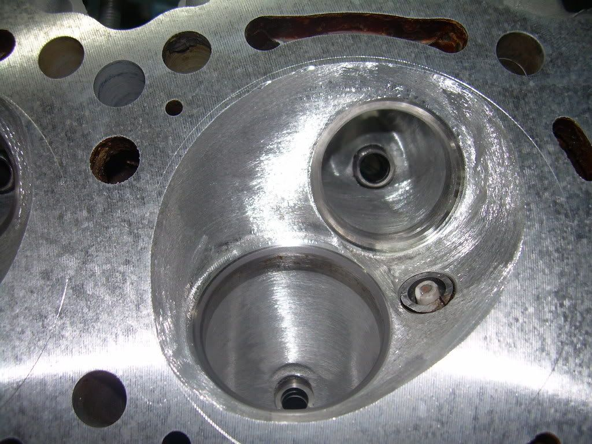

-
150 on the pavement is a piece of cake. 130 is stock. I made 150 with headers, 2 1/2" custom exhaust, K&N filter (got rid of the intake box and resonater), 60mm throttle body, a way to add fuel(suggest Nistune), advancing the timing and a good tune up.92PathSE wrote: I was really hoping to make over 200 whp on my NA, but after reading this thread maybe not. My VG30 spare(pathfinder) has about 15k miles on it so I don't want to replace anything in the bottom. I was just going to port the heads, change cams, and use a larger TB from a 240SX sohc or change out the whole manifold to one from a VG33, if that's possible. Megasquirt for fuel and spark. I'd be really happy with 150 on the pavement but I don't see it happening now.
There's no room for a turbo and IC where they won't get damaged by rocks and stuff. Plus there would be miles of pipe.
Thanks for the info :-D
Got to 164 and 170 in two different cars with this set up and adjustable cam gears.
I ported/polished the heads and added nismo cams, and 260cc injectors looking for 200.
Unfortunately, the # 5 rod bearing gave out last summer (had 206K on it ) so I am starting over.
The bottom end is done, but the heads I had hoped to swap over were ruined also.
The new bottom end has The 12:1 CR Ross pistons. Once the new heads are done, I have no doubt that this time I will surpass 200 WHP. Hopefully that will be this summer before the race season is over.…and how much HP do you have at 0 boost -
I currently have 211whp 209torque from a .040 over vg33. 11.4 comp, ferrea 1mm over valves, Isky .465 lift 270 dur. cam, ported heads, custom headers. This with the stock ecu map. Installing megasquirt now. Also has 60mm tb. Will be installing cam gears and coating the intake to help control heat that is absorbed from the coolant passage in the intake. With addl. mods hope to have 240 whp. But like my boss says, hope in one hand and shit in the other, then see which one fills up first. -
What are you using for Psitons to get 11.4 C/R?a22770 wrote: I currently have 211whp 209torque from a .040 over vg33. 11.4 comp, ferrea 1mm over valves, Isky .465 lift 270 dur. cam, ported heads, custom headers. This with the stock ecu map. Installing megasquirt now. Also has 60mm tb. Will be installing cam gears and coating the intake to help control heat that is absorbed from the coolant passage in the intake. With addl. mods hope to have 240 whp. But like my boss says, hope in one hand and shit in the other, then see which one fills up first.…and how much HP do you have at 0 boost -
damn aaron you were using a stock map on that VG33? im suprised it even ran
my bets are you break 250hp+trq with a tune -
Using JE slugs, .04" dome, I think there are some pics somewhere.http://s252.photobucket.com/a … 31/a22770/
This piston with stock chambers has 12.3/1 compression. had to modify the chambers to correct a flow problem it had at .425 and higher lift.
HP numbers are with pump gas, may try 100 octane no-lead to see if it does any better -
Ok, question, I don't know shit about shaping combustion chambers. I mean I can look at it and make a good guess as to where to add and remove materials, but in the end thats all it would be is a guess. So where did you learn exactly how to modify the combustion chambers? Do you have pictures of what you did? Also, you said it was at .425 lift and higher that flow seemed to have problems correct? How much improvement did you see?a22770 wrote: Using JE slugs, .04" dome, I think there are some pics somewhere.http://s252.photobucket.com/a … 31/a22770/
This piston with stock chambers has 12.3/1 compression. had to modify the chambers to correct a flow problem it had at .425 and higher lift.
HP numbers are with pump gas, may try 100 octane no-lead to see if it does any better85 Z31 6.0 LSX turbo 766whp/792wtq
04 GTO, LS6, big cam, porting, N20… underway for summertime daily driver. -
Most of what I have learned about shaping combustion chambers if from trial and error, and testing each change on the flowbench. The most important part is the evaluation if each change you make, and if you don't have a flowbench that can be very hard. The changes I make are purely from a flow stand point. I'm usually trying to improve a part of the flow curve or fix a problem. On the VG heads it was both. The later VG heads ( 85e and 0w0 castings ) have a smaller intake port than the older ( v52 and 21v ) castings. With the smaller port the velocity goes up, and at appx. .425 lift the air speed was too fast and the port stalled. A stall is where the port flows less at a higher valve lift, due to air separating from the short turn. Long story short the fix was not in the port, it was caused by the slight chamber shrouding of the intake valve.
The flow at .425 was 186cfm @ 28"h2o, and it dropped to 174 cfm by .440. After the changes to the chamber it flowed 199 cfm at .440 and would continue to flow until .500 where it flowed 214 cfm.

Hope this helps. -
It helps, but I don't have access to a flowbench :-D Now I know what that 85 on the back of the head is for…
The stock hp for the 90-95 Pathfinders is 155hp, according to Nissan. Assuming they have the new-style heads, do they also have different cams or computers?
A whole new exhaust is a necessity. The old stuff is falling apart, cat is clogged, studs are broken… I have no idea what to expect as far as gains from fixing this. But I do know, it's gonna be a good day.
Despite all of the issues, the 92 gets better gas mileage than the 01…----
92 WD21 4x4 VG30 - in progress
01 Pathfinder VQ35 - DD / For sale -
Going for a 220 WHP build on my 88k miles 1986 NA.
loving these VG30s so far! -
Mike P did 225whp on his VG30e build. Itâs on the Z31 Drivers, Z31Online, and Z31Perfomance pages on Facebook. If Iâm not mistaken he used 280/280 isky cams with a pathfinder plenum in stock injectors. Has the dyno graph to prove it too.1986 z31 NA2T(Motor is being assembled)
1984 z31 Turbo 5 speed(slowly being parted out)

Copyright © 2006–. All rights reserved. Privacy Policy